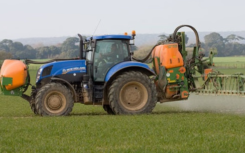

Green Revolution
The Green Revolution was a period that began in the 1960s during which agriculture in India was converted into a modern industrial system by the adoption of technology, such as the use of high yielding variety (HYV) seeds, mechanised farm tools, irrigation facilities, pesticides, and fertilizers bu at what expense...
Resources
Podcast - listen to minutes 35-45